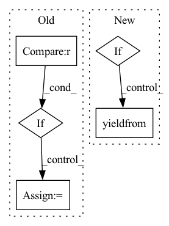

Pattern ID :35774
Before Change
// Paragraphs of text body
section_dirs = self.get_paragraphs_sections_mapping()
for paragraph in self.content.findall(".//p"):
if paragraph not in exclude_list :
text = self._element_to_str(paragraph)
section_title = ""
if paragraph in section_dirs:
section_title = section_dirs[paragraph]
yield section_title, textAfter Change
// Paragraphs of text body
body = self.content.find("./body")
if body:
yield from self.parse_section(body)
// Figure captions
figs = self.content.findall("./body//fig")In pattern: SUPERPATTERN
Frequency: 3
Non-data size: 5
Instances Fragment ID: 101804593
Project Name: bluebrain/search
Commit Name: 8d00d39899e846b7c98ce66794673aff4df8b62c
Time: 2021-11-23
Author: 47669575+EmilieDel@users.noreply.github.com
File Name: src/bluesearch/database/article.py
M Class Name: JATSXMLParser
N Class Name: JATSXMLParser
M Method Name: paragraphs(1)
N Method Name: paragraphs(1)
M Parent Class: ArticleParser
N Parent Class: ArticleParser
M File Name: src/bluesearch/database/article.py
N File Name: src/bluesearch/database/article.py
M Start Line: 205
M End Line: 242
N Start Line: 207
N End Line: 233
Before Change
yield gen_text(text=rec, valid=None, explain=None, delimiter=delim)
else:
check = line_validator(rec)
if check is False :
_valid = False
invalid += 1
else:
_valid = TrueAfter Change
num_workers, chunks = split_work(parallelism, _line_count)
if num_workers == 1: // Sequential operation
gen = Generator(settings)
yield from gen.generate_next(_line_count)
else:
yield from generate_parallel(settings, num_workers, chunks)
Fragment ID: 101804577
Project Name: gretelai/gretel-synthetics
Commit Name: deb22ec34ee12cf49d8176c17464dea254085f39
Time: 2020-08-04
Author: 2822367+misberner@users.noreply.github.com
File Name: src/gretel_synthetics/generate.py
M Class Name: AnonimousClass
N Class Name: AnonimousClass
M Method Name: generate_text(6)
N Method Name: generate_text(5)
M Parent Class:
N Parent Class:
M File Name: src/gretel_synthetics/generate.py
N File Name: src/gretel_synthetics/generate.py
M Start Line: 164
M End Line: 206
N Start Line: 36
N End Line: 113
Before Change
url = f"{self._API_PREFIX}/{name}/records/:search?limit={self.DEFAULT_SCAN_SIZE}"
query = self._parse_query(query=query)
if limit == 0 :
limit = None
request = {
"fields": list(projection) if projection else ["id"],After Change
An iterable of raw object containing per-record info
if limit and limit < 0:
raise ValueError("The scan limit must be non-negative.")
batch_size = self.DEFAULT_SCAN_SIZE
limit = limit if limit else math.inf
url = f"{self._API_PREFIX}/{name}/records/:search?limit={{limit}}"
query = self._parse_query(query=query)
request = {
"fields": list(projection) if projection else ["id"],
"query": query,
}
if id_from:
request["next_idx"] = id_from
with api_compatibility(self, min_version="1.2.0"):
request_limit = min(limit, batch_size)
response = self.http_client.post(
url.format(limit=request_limit),
json=request,
)
while response.get("records"):
yield from response["records"]
limit -= request_limit
if limit <= 0:
return Fragment ID: 101804582
Project Name: recognai/rubrix
Commit Name: f5834a5408051bf1fa60d42aede6b325dc07fdbd
Time: 2023-03-01
Author: 37621491+tomaarsen@users.noreply.github.com
File Name: src/argilla/client/apis/datasets.py
M Class Name: Datasets
N Class Name: Datasets
M Method Name: scan(5)
N Method Name: scan(5)
M Parent Class: AbstractApi
N Parent Class: AbstractApi
M File Name: src/argilla/client/apis/datasets.py
N File Name: src/argilla/client/apis/datasets.py
M Start Line: 178
M End Line: 206
N Start Line: 177
N End Line: 208